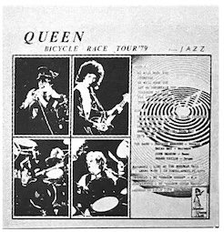

Vol. 23 — October 1982
This volume contains info and excitement about Queen's upcoming fifth Japanese tour, which would take place in October of 1982. Unlike the 1981 Japanese visit, which saw the band performing only at the Budoukan in Tokyo, the 1982 shows spanned much of the Japanese country once again, making it easier for fans to attend locally.Tenpei Matsubayashi, who managed Queen on behalf of Warner Pioneer during their heyday and author of the 2025 book A Splendid Rock Show: A Memoir, has a message in the front of this volume. The rest of the magazine is largely devoted to old unpublished photos of the band from the 70s and a recap of their careers thus far, giving this issue an almost nostalgic feel even as the fans were looking forward to the upcoming tour. At a time when Hot Space had been released to a lukewarm reception, many fans were taking a look back through their prior work.
One section of note is a continuation of the "My Collection, My Queen" feature where fans shared their rare vinyl and memorabilia collections. An entity known as "Shadow Queen" shares their bootleg collection, broken up into two parts between this issue and the next. It's oddly laid out and confusing, with images in one issue and titles in another, but there are some interesting things here.

One other interesting bit is that the No News Is Good News bootleg is also listed, but is expressly notated as being a double LP rather than one as is documented. It's unclear what the alleged second LP would contain.